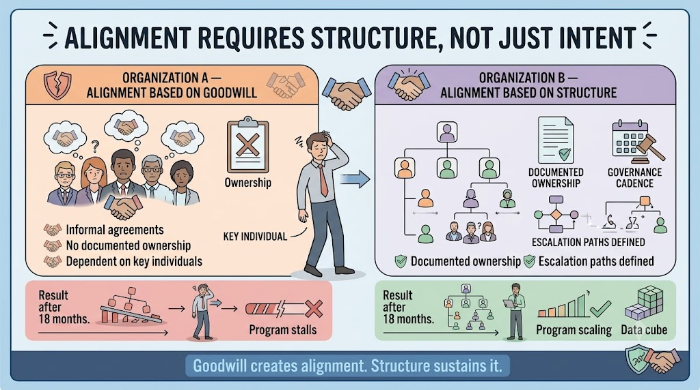
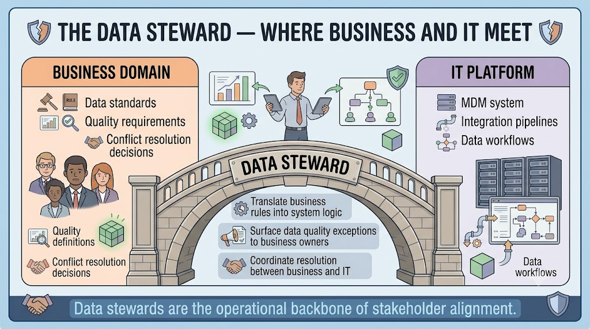
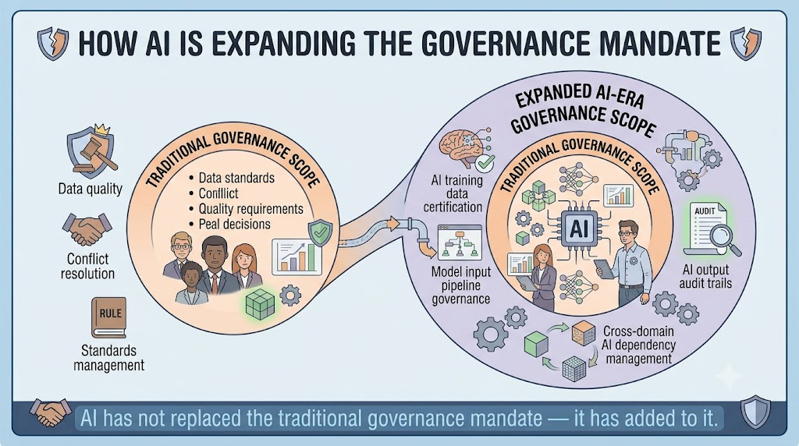
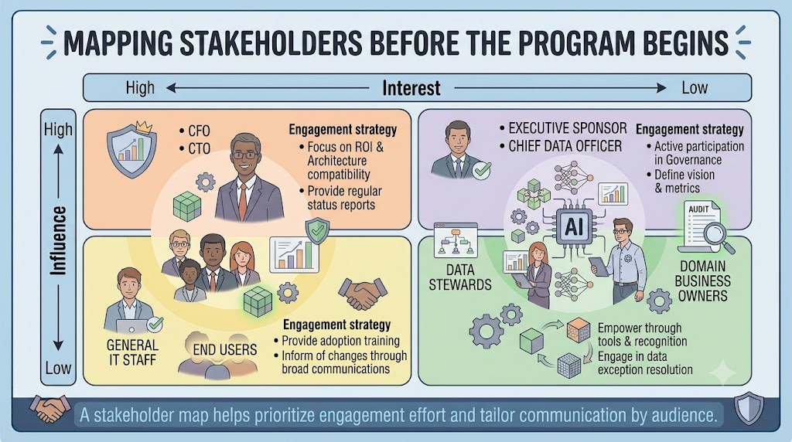
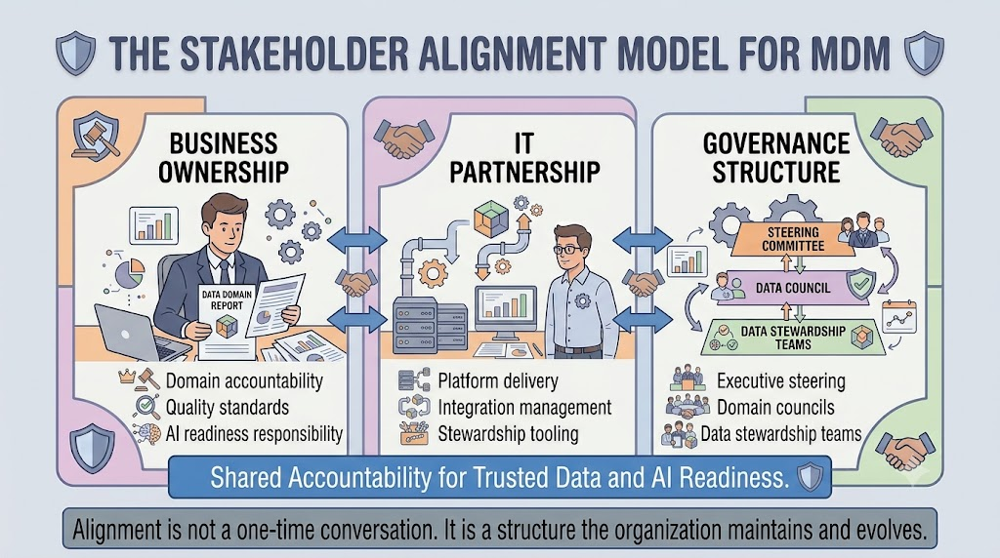

Stakeholder Alignment
Module support notes
Why Stakeholder Alignment Is a Structural Problem
Stakeholder alignment is frequently treated as a people challenge — a matter of communication, relationship-building, and organizational culture. These things matter, but they are not sufficient on their own. MDM programs that depend on informal alignment are fragile.
When key people change roles, when business priorities shift, or when the program moves from energetic early phases into steady-state operations, informal alignment tends to dissolve. Structural alignment — documented ownership, defined governance bodies, clear escalation paths, and regular accountability touchpoints — is what keeps MDM programs coherent over time.
Warning
Goodwill creates alignment. Structure sustains it. If your MDM program's stakeholder alignment depends on specific individuals staying in their current roles, it is one reorganization away from collapse. Document ownership, governance cadences, and escalation paths so the program can survive personnel changes.

The Business Data Steward Role
Data stewards occupy a unique position in the MDM stakeholder landscape. They sit at the intersection of business and IT — close enough to the business to understand the context behind data decisions, and close enough to the technology to translate those decisions into system behavior.
Effective data stewards are not purely technical and not purely operational. They are fluent in both languages, acting as the connective tissue that keeps business intent and system behavior aligned. Organizations that invest in developing strong data stewards consistently report better MDM outcomes than those that treat stewardship as an administrative function.
- Translate business rules into system logic the MDM platform can enforce
- Surface data quality exceptions to the right business owners for resolution
- Coordinate decisions between business and IT when conflicts arise

Governance in the Age of AI
The rise of AI initiatives is expanding the governance mandate in ways that most MDM governance frameworks were not originally designed to accommodate. Traditional governance focused on data quality, conflict resolution, and standards management — all of which remain essential.
AI adds new requirements: governance bodies must now certify that data domains are ready to feed AI systems, oversee the pipelines delivering master data to model training environments, and maintain audit trails allowing AI outputs to be traced back to their data inputs. Organizations updating their governance frameworks to reflect these responsibilities are building a more durable foundation for AI accountability — one that connects data governance directly to AI risk management.
Note
AI has not replaced the traditional governance mandate — it has added to it. Expanding AI-era governance scope includes: AI training data certification, model input pipeline governance, AI output audit trails, and cross-domain AI dependency management. Existing governance structures can often be extended to cover these, rather than rebuilt from scratch.

Building a Stakeholder Map
Stakeholder mapping is a practical tool that MDM program teams often underuse. Before a program launches, identifying who has high influence over MDM investment decisions, who has high interest in MDM outcomes, and how those two dimensions interact allows the program team to prioritize engagement effort and tailor communication appropriately.
Mapping stakeholders before the program begins prevents the common failure of over-communicating to technical audiences while under-engaging the business leaders whose support determines whether the program gets funded and sustained.
Tip
Use a simple two-by-two influence/interest matrix to prioritize your engagement model. High influence and high interest stakeholders — typically the Executive Sponsor and Chief Data Officer — need regular strategic updates tied to business outcomes. High influence but low interest stakeholders, like the CFO or CTO, need concise, outcome-focused briefings at key decision points rather than ongoing operational updates.

Effective stakeholder alignment is not a conversation that happens once at program launch — it is a structure the organization builds, maintains, and evolves as MDM matures and AI dependencies grow.
